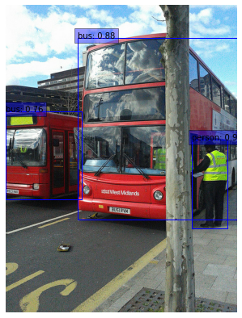
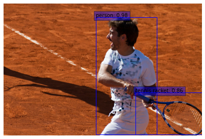

Object Detection with RetinaNet
Author: Srihari Humbarwadi
Date created: 2020/05/17
Last modified: 2023/07/10
Description: Implementing RetinaNet: Focal Loss for Dense Object Detection.

Introduction
Object detection a very important problem in computer vision. Here the model is tasked with localizing the objects present in an image, and at the same time, classifying them into different categories. Object detection models can be broadly classified into "single-stage" and "two-stage" detectors. Two-stage detectors are often more accurate but at the cost of being slower. Here in this example, we will implement RetinaNet, a popular single-stage detector, which is accurate and runs fast. RetinaNet uses a feature pyramid network to efficiently detect objects at multiple scales and introduces a new loss, the Focal loss function, to alleviate the problem of the extreme foreground-background class imbalance.
References:
import os
import re
import zipfile
import numpy as np
import tensorflow as tf
from tensorflow import keras
import matplotlib.pyplot as plt
import tensorflow_datasets as tfds
Downloading the COCO2017 dataset
Training on the entire COCO2017 dataset which has around 118k images takes a lot of time, hence we will be using a smaller subset of ~500 images for training in this example.
url = "https://github.com/srihari-humbarwadi/datasets/releases/download/v0.1.0/data.zip"
filename = os.path.join(os.getcwd(), "data.zip")
keras.utils.get_file(filename, url)
with zipfile.ZipFile("data.zip", "r") as z_fp:
z_fp.extractall("./")
Downloading data from https://github.com/srihari-humbarwadi/datasets/releases/download/v0.1.0/data.zip
560529408/560525318 [==============================] - 7s 0us/step
560537600/560525318 [==============================] - 7s 0us/step
Implementing utility functions
Bounding boxes can be represented in multiple ways, the most common formats are:
- Storing the coordinates of the corners
[xmin, ymin, xmax, ymax] - Storing the coordinates of the center and the box dimensions
[x, y, width, height]
Since we require both formats, we will be implementing functions for converting between the formats.
def swap_xy(boxes):
"""Swaps order the of x and y coordinates of the boxes.
Arguments:
boxes: A tensor with shape `(num_boxes, 4)` representing bounding boxes.
Returns:
swapped boxes with shape same as that of boxes.
"""
return tf.stack([boxes[:, 1], boxes[:, 0], boxes[:, 3], boxes[:, 2]], axis=-1)
def convert_to_xywh(boxes):
"""Changes the box format to center, width and height.
Arguments:
boxes: A tensor of rank 2 or higher with a shape of `(..., num_boxes, 4)`
representing bounding boxes where each box is of the format
`[xmin, ymin, xmax, ymax]`.
Returns:
converted boxes with shape same as that of boxes.
"""
return tf.concat(
[(boxes[..., :2] + boxes[..., 2:]) / 2.0, boxes[..., 2:] - boxes[..., :2]],
axis=-1,
)
def convert_to_corners(boxes):
"""Changes the box format to corner coordinates
Arguments:
boxes: A tensor of rank 2 or higher with a shape of `(..., num_boxes, 4)`
representing bounding boxes where each box is of the format
`[x, y, width, height]`.
Returns:
converted boxes with shape same as that of boxes.
"""
return tf.concat(
[boxes[..., :2] - boxes[..., 2:] / 2.0, boxes[..., :2] + boxes[..., 2:] / 2.0],
axis=-1,
)
Computing pairwise Intersection Over Union (IOU)
As we will see later in the example, we would be assigning ground truth boxes to anchor boxes based on the extent of overlapping. This will require us to calculate the Intersection Over Union (IOU) between all the anchor boxes and ground truth boxes pairs.
def compute_iou(boxes1, boxes2):
"""Computes pairwise IOU matrix for given two sets of boxes
Arguments:
boxes1: A tensor with shape `(N, 4)` representing bounding boxes
where each box is of the format `[x, y, width, height]`.
boxes2: A tensor with shape `(M, 4)` representing bounding boxes
where each box is of the format `[x, y, width, height]`.
Returns:
pairwise IOU matrix with shape `(N, M)`, where the value at ith row
jth column holds the IOU between ith box and jth box from
boxes1 and boxes2 respectively.
"""
boxes1_corners = convert_to_corners(boxes1)
boxes2_corners = convert_to_corners(boxes2)
lu = tf.maximum(boxes1_corners[:, None, :2], boxes2_corners[:, :2])
rd = tf.minimum(boxes1_corners[:, None, 2:], boxes2_corners[:, 2:])
intersection = tf.maximum(0.0, rd - lu)
intersection_area = intersection[:, :, 0] * intersection[:, :, 1]
boxes1_area = boxes1[:, 2] * boxes1[:, 3]
boxes2_area = boxes2[:, 2] * boxes2[:, 3]
union_area = tf.maximum(
boxes1_area[:, None] + boxes2_area - intersection_area, 1e-8
)
return tf.clip_by_value(intersection_area / union_area, 0.0, 1.0)
def visualize_detections(
image, boxes, classes, scores, figsize=(7, 7), linewidth=1, color=[0, 0, 1]
):
"""Visualize Detections"""
image = np.array(image, dtype=np.uint8)
plt.figure(figsize=figsize)
plt.axis("off")
plt.imshow(image)
ax = plt.gca()
for box, _cls, score in zip(boxes, classes, scores):
text = "{}: {:.2f}".format(_cls, score)
x1, y1, x2, y2 = box
w, h = x2 - x1, y2 - y1
patch = plt.Rectangle(
[x1, y1], w, h, fill=False, edgecolor=color, linewidth=linewidth
)
ax.add_patch(patch)
ax.text(
x1,
y1,
text,
bbox={"facecolor": color, "alpha": 0.4},
clip_box=ax.clipbox,
clip_on=True,
)
plt.show()
return ax
Implementing Anchor generator
Anchor boxes are fixed sized boxes that the model uses to predict the bounding box for an object. It does this by regressing the offset between the location of the object's center and the center of an anchor box, and then uses the width and height of the anchor box to predict a relative scale of the object. In the case of RetinaNet, each location on a given feature map has nine anchor boxes (at three scales and three ratios).
class AnchorBox:
"""Generates anchor boxes.
This class has operations to generate anchor boxes for feature maps at
strides `[8, 16, 32, 64, 128]`. Where each anchor each box is of the
format `[x, y, width, height]`.
Attributes:
aspect_ratios: A list of float values representing the aspect ratios of
the anchor boxes at each location on the feature map
scales: A list of float values representing the scale of the anchor boxes
at each location on the feature map.
num_anchors: The number of anchor boxes at each location on feature map
areas: A list of float values representing the areas of the anchor
boxes for each feature map in the feature pyramid.
strides: A list of float value representing the strides for each feature
map in the feature pyramid.
"""
def __init__(self):
self.aspect_ratios = [0.5, 1.0, 2.0]
self.scales = [2 ** x for x in [0, 1 / 3, 2 / 3]]
self._num_anchors = len(self.aspect_ratios) * len(self.scales)
self._strides = [2 ** i for i in range(3, 8)]
self._areas = [x ** 2 for x in [32.0, 64.0, 128.0, 256.0, 512.0]]
self._anchor_dims = self._compute_dims()
def _compute_dims(self):
"""Computes anchor box dimensions for all ratios and scales at all levels
of the feature pyramid.
"""
anchor_dims_all = []
for area in self._areas:
anchor_dims = []
for ratio in self.aspect_ratios:
anchor_height = tf.math.sqrt(area / ratio)
anchor_width = area / anchor_height
dims = tf.reshape(
tf.stack([anchor_width, anchor_height], axis=-1), [1, 1, 2]
)
for scale in self.scales:
anchor_dims.append(scale * dims)
anchor_dims_all.append(tf.stack(anchor_dims, axis=-2))
return anchor_dims_all
def _get_anchors(self, feature_height, feature_width, level):
"""Generates anchor boxes for a given feature map size and level
Arguments:
feature_height: An integer representing the height of the feature map.
feature_width: An integer representing the width of the feature map.
level: An integer representing the level of the feature map in the
feature pyramid.
Returns:
anchor boxes with the shape
`(feature_height * feature_width * num_anchors, 4)`
"""
rx = tf.range(feature_width, dtype=tf.float32) + 0.5
ry = tf.range(feature_height, dtype=tf.float32) + 0.5
centers = tf.stack(tf.meshgrid(rx, ry), axis=-1) * self._strides[level - 3]
centers = tf.expand_dims(centers, axis=-2)
centers = tf.tile(centers, [1, 1, self._num_anchors, 1])
dims = tf.tile(
self._anchor_dims[level - 3], [feature_height, feature_width, 1, 1]
)
anchors = tf.concat([centers, dims], axis=-1)
return tf.reshape(
anchors, [feature_height * feature_width * self._num_anchors, 4]
)
def get_anchors(self, image_height, image_width):
"""Generates anchor boxes for all the feature maps of the feature pyramid.
Arguments:
image_height: Height of the input image.
image_width: Width of the input image.
Returns:
anchor boxes for all the feature maps, stacked as a single tensor
with shape `(total_anchors, 4)`
"""
anchors = [
self._get_anchors(
tf.math.ceil(image_height / 2 ** i),
tf.math.ceil(image_width / 2 ** i),
i,
)
for i in range(3, 8)
]
return tf.concat(anchors, axis=0)
Preprocessing data
Preprocessing the images involves two steps:
- Resizing the image: Images are resized such that the shortest size is equal to 800 px, after resizing if the longest side of the image exceeds 1333 px, the image is resized such that the longest size is now capped at 1333 px.
- Applying augmentation: Random scale jittering and random horizontal flipping are the only augmentations applied to the images.
Along with the images, bounding boxes are rescaled and flipped if required.
def random_flip_horizontal(image, boxes):
"""Flips image and boxes horizontally with 50% chance
Arguments:
image: A 3-D tensor of shape `(height, width, channels)` representing an
image.
boxes: A tensor with shape `(num_boxes, 4)` representing bounding boxes,
having normalized coordinates.
Returns:
Randomly flipped image and boxes
"""
if tf.random.uniform(()) > 0.5:
image = tf.image.flip_left_right(image)
boxes = tf.stack(
[1 - boxes[:, 2], boxes[:, 1], 1 - boxes[:, 0], boxes[:, 3]], axis=-1
)
return image, boxes
def resize_and_pad_image(
image, min_side=800.0, max_side=1333.0, jitter=[640, 1024], stride=128.0
):
"""Resizes and pads image while preserving aspect ratio.
1. Resizes images so that the shorter side is equal to `min_side`
2. If the longer side is greater than `max_side`, then resize the image
with longer side equal to `max_side`
3. Pad with zeros on right and bottom to make the image shape divisible by
`stride`
Arguments:
image: A 3-D tensor of shape `(height, width, channels)` representing an
image.
min_side: The shorter side of the image is resized to this value, if
`jitter` is set to None.
max_side: If the longer side of the image exceeds this value after
resizing, the image is resized such that the longer side now equals to
this value.
jitter: A list of floats containing minimum and maximum size for scale
jittering. If available, the shorter side of the image will be
resized to a random value in this range.
stride: The stride of the smallest feature map in the feature pyramid.
Can be calculated using `image_size / feature_map_size`.
Returns:
image: Resized and padded image.
image_shape: Shape of the image before padding.
ratio: The scaling factor used to resize the image
"""
image_shape = tf.cast(tf.shape(image)[:2], dtype=tf.float32)
if jitter is not None:
min_side = tf.random.uniform((), jitter[0], jitter[1], dtype=tf.float32)
ratio = min_side / tf.reduce_min(image_shape)
if ratio * tf.reduce_max(image_shape) > max_side:
ratio = max_side / tf.reduce_max(image_shape)
image_shape = ratio * image_shape
image = tf.image.resize(image, tf.cast(image_shape, dtype=tf.int32))
padded_image_shape = tf.cast(
tf.math.ceil(image_shape / stride) * stride, dtype=tf.int32
)
image = tf.image.pad_to_bounding_box(
image, 0, 0, padded_image_shape[0], padded_image_shape[1]
)
return image, image_shape, ratio
def preprocess_data(sample):
"""Applies preprocessing step to a single sample
Arguments:
sample: A dict representing a single training sample.
Returns:
image: Resized and padded image with random horizontal flipping applied.
bbox: Bounding boxes with the shape `(num_objects, 4)` where each box is
of the format `[x, y, width, height]`.
class_id: An tensor representing the class id of the objects, having
shape `(num_objects,)`.
"""
image = sample["image"]
bbox = swap_xy(sample["objects"]["bbox"])
class_id = tf.cast(sample["objects"]["label"], dtype=tf.int32)
image, bbox = random_flip_horizontal(image, bbox)
image, image_shape, _ = resize_and_pad_image(image)
bbox = tf.stack(
[
bbox[:, 0] * image_shape[1],
bbox[:, 1] * image_shape[0],
bbox[:, 2] * image_shape[1],
bbox[:, 3] * image_shape[0],
],
axis=-1,
)
bbox = convert_to_xywh(bbox)
return image, bbox, class_id
Encoding labels
The raw labels, consisting of bounding boxes and class ids need to be transformed into targets for training. This transformation consists of the following steps:
- Generating anchor boxes for the given image dimensions
- Assigning ground truth boxes to the anchor boxes
- The anchor boxes that are not assigned any objects, are either assigned the background class or ignored depending on the IOU
- Generating the classification and regression targets using anchor boxes
class LabelEncoder:
"""Transforms the raw labels into targets for training.
This class has operations to generate targets for a batch of samples which
is made up of the input images, bounding boxes for the objects present and
their class ids.
Attributes:
anchor_box: Anchor box generator to encode the bounding boxes.
box_variance: The scaling factors used to scale the bounding box targets.
"""
def __init__(self):
self._anchor_box = AnchorBox()
self._box_variance = tf.convert_to_tensor(
[0.1, 0.1, 0.2, 0.2], dtype=tf.float32
)
def _match_anchor_boxes(
self, anchor_boxes, gt_boxes, match_iou=0.5, ignore_iou=0.4
):
"""Matches ground truth boxes to anchor boxes based on IOU.
1. Calculates the pairwise IOU for the M `anchor_boxes` and N `gt_boxes`
to get a `(M, N)` shaped matrix.
2. The ground truth box with the maximum IOU in each row is assigned to
the anchor box provided the IOU is greater than `match_iou`.
3. If the maximum IOU in a row is less than `ignore_iou`, the anchor
box is assigned with the background class.
4. The remaining anchor boxes that do not have any class assigned are
ignored during training.
Arguments:
anchor_boxes: A float tensor with the shape `(total_anchors, 4)`
representing all the anchor boxes for a given input image shape,
where each anchor box is of the format `[x, y, width, height]`.
gt_boxes: A float tensor with shape `(num_objects, 4)` representing
the ground truth boxes, where each box is of the format
`[x, y, width, height]`.
match_iou: A float value representing the minimum IOU threshold for
determining if a ground truth box can be assigned to an anchor box.
ignore_iou: A float value representing the IOU threshold under which
an anchor box is assigned to the background class.
Returns:
matched_gt_idx: Index of the matched object
positive_mask: A mask for anchor boxes that have been assigned ground
truth boxes.
ignore_mask: A mask for anchor boxes that need to by ignored during
training
"""
iou_matrix = compute_iou(anchor_boxes, gt_boxes)
max_iou = tf.reduce_max(iou_matrix, axis=1)
matched_gt_idx = tf.argmax(iou_matrix, axis=1)
positive_mask = tf.greater_equal(max_iou, match_iou)
negative_mask = tf.less(max_iou, ignore_iou)
ignore_mask = tf.logical_not(tf.logical_or(positive_mask, negative_mask))
return (
matched_gt_idx,
tf.cast(positive_mask, dtype=tf.float32),
tf.cast(ignore_mask, dtype=tf.float32),
)
def _compute_box_target(self, anchor_boxes, matched_gt_boxes):
"""Transforms the ground truth boxes into targets for training"""
box_target = tf.concat(
[
(matched_gt_boxes[:, :2] - anchor_boxes[:, :2]) / anchor_boxes[:, 2:],
tf.math.log(matched_gt_boxes[:, 2:] / anchor_boxes[:, 2:]),
],
axis=-1,
)
box_target = box_target / self._box_variance
return box_target
def _encode_sample(self, image_shape, gt_boxes, cls_ids):
"""Creates box and classification targets for a single sample"""
anchor_boxes = self._anchor_box.get_anchors(image_shape[1], image_shape[2])
cls_ids = tf.cast(cls_ids, dtype=tf.float32)
matched_gt_idx, positive_mask, ignore_mask = self._match_anchor_boxes(
anchor_boxes, gt_boxes
)
matched_gt_boxes = tf.gather(gt_boxes, matched_gt_idx)
box_target = self._compute_box_target(anchor_boxes, matched_gt_boxes)
matched_gt_cls_ids = tf.gather(cls_ids, matched_gt_idx)
cls_target = tf.where(
tf.not_equal(positive_mask, 1.0), -1.0, matched_gt_cls_ids
)
cls_target = tf.where(tf.equal(ignore_mask, 1.0), -2.0, cls_target)
cls_target = tf.expand_dims(cls_target, axis=-1)
label = tf.concat([box_target, cls_target], axis=-1)
return label
def encode_batch(self, batch_images, gt_boxes, cls_ids):
"""Creates box and classification targets for a batch"""
images_shape = tf.shape(batch_images)
batch_size = images_shape[0]
labels = tf.TensorArray(dtype=tf.float32, size=batch_size, dynamic_size=True)
for i in range(batch_size):
label = self._encode_sample(images_shape, gt_boxes[i], cls_ids[i])
labels = labels.write(i, label)
batch_images = tf.keras.applications.resnet.preprocess_input(batch_images)
return batch_images, labels.stack()
Building the ResNet50 backbone
RetinaNet uses a ResNet based backbone, using which a feature pyramid network is constructed. In the example we use ResNet50 as the backbone, and return the feature maps at strides 8, 16 and 32.
def get_backbone():
"""Builds ResNet50 with pre-trained imagenet weights"""
backbone = keras.applications.ResNet50(
include_top=False, input_shape=[None, None, 3]
)
c3_output, c4_output, c5_output = [
backbone.get_layer(layer_name).output
for layer_name in ["conv3_block4_out", "conv4_block6_out", "conv5_block3_out"]
]
return keras.Model(
inputs=[backbone.inputs], outputs=[c3_output, c4_output, c5_output]
)
Building Feature Pyramid Network as a custom layer
class FeaturePyramid(keras.layers.Layer):
"""Builds the Feature Pyramid with the feature maps from the backbone.
Attributes:
num_classes: Number of classes in the dataset.
backbone: The backbone to build the feature pyramid from.
Currently supports ResNet50 only.
"""
def __init__(self, backbone=None, **kwargs):
super().__init__(name="FeaturePyramid", **kwargs)
self.backbone = backbone if backbone else get_backbone()
self.conv_c3_1x1 = keras.layers.Conv2D(256, 1, 1, "same")
self.conv_c4_1x1 = keras.layers.Conv2D(256, 1, 1, "same")
self.conv_c5_1x1 = keras.layers.Conv2D(256, 1, 1, "same")
self.conv_c3_3x3 = keras.layers.Conv2D(256, 3, 1, "same")
self.conv_c4_3x3 = keras.layers.Conv2D(256, 3, 1, "same")
self.conv_c5_3x3 = keras.layers.Conv2D(256, 3, 1, "same")
self.conv_c6_3x3 = keras.layers.Conv2D(256, 3, 2, "same")
self.conv_c7_3x3 = keras.layers.Conv2D(256, 3, 2, "same")
self.upsample_2x = keras.layers.UpSampling2D(2)
def call(self, images, training=False):
c3_output, c4_output, c5_output = self.backbone(images, training=training)
p3_output = self.conv_c3_1x1(c3_output)
p4_output = self.conv_c4_1x1(c4_output)
p5_output = self.conv_c5_1x1(c5_output)
p4_output = p4_output + self.upsample_2x(p5_output)
p3_output = p3_output + self.upsample_2x(p4_output)
p3_output = self.conv_c3_3x3(p3_output)
p4_output = self.conv_c4_3x3(p4_output)
p5_output = self.conv_c5_3x3(p5_output)
p6_output = self.conv_c6_3x3(c5_output)
p7_output = self.conv_c7_3x3(tf.nn.relu(p6_output))
return p3_output, p4_output, p5_output, p6_output, p7_output
Building the classification and box regression heads.
The RetinaNet model has separate heads for bounding box regression and for predicting class probabilities for the objects. These heads are shared between all the feature maps of the feature pyramid.
def build_head(output_filters, bias_init):
"""Builds the class/box predictions head.
Arguments:
output_filters: Number of convolution filters in the final layer.
bias_init: Bias Initializer for the final convolution layer.
Returns:
A keras sequential model representing either the classification
or the box regression head depending on `output_filters`.
"""
head = keras.Sequential([keras.Input(shape=[None, None, 256])])
kernel_init = tf.initializers.RandomNormal(0.0, 0.01)
for _ in range(4):
head.add(
keras.layers.Conv2D(256, 3, padding="same", kernel_initializer=kernel_init)
)
head.add(keras.layers.ReLU())
head.add(
keras.layers.Conv2D(
output_filters,
3,
1,
padding="same",
kernel_initializer=kernel_init,
bias_initializer=bias_init,
)
)
return head
Building RetinaNet using a subclassed model
class RetinaNet(keras.Model):
"""A subclassed Keras model implementing the RetinaNet architecture.
Attributes:
num_classes: Number of classes in the dataset.
backbone: The backbone to build the feature pyramid from.
Currently supports ResNet50 only.
"""
def __init__(self, num_classes, backbone=None, **kwargs):
super().__init__(name="RetinaNet", **kwargs)
self.fpn = FeaturePyramid(backbone)
self.num_classes = num_classes
prior_probability = tf.constant_initializer(-np.log((1 - 0.01) / 0.01))
self.cls_head = build_head(9 * num_classes, prior_probability)
self.box_head = build_head(9 * 4, "zeros")
def call(self, image, training=False):
features = self.fpn(image, training=training)
N = tf.shape(image)[0]
cls_outputs = []
box_outputs = []
for feature in features:
box_outputs.append(tf.reshape(self.box_head(feature), [N, -1, 4]))
cls_outputs.append(
tf.reshape(self.cls_head(feature), [N, -1, self.num_classes])
)
cls_outputs = tf.concat(cls_outputs, axis=1)
box_outputs = tf.concat(box_outputs, axis=1)
return tf.concat([box_outputs, cls_outputs], axis=-1)
Implementing a custom layer to decode predictions
class DecodePredictions(tf.keras.layers.Layer):
"""A Keras layer that decodes predictions of the RetinaNet model.
Attributes:
num_classes: Number of classes in the dataset
confidence_threshold: Minimum class probability, below which detections
are pruned.
nms_iou_threshold: IOU threshold for the NMS operation
max_detections_per_class: Maximum number of detections to retain per
class.
max_detections: Maximum number of detections to retain across all
classes.
box_variance: The scaling factors used to scale the bounding box
predictions.
"""
def __init__(
self,
num_classes=80,
confidence_threshold=0.05,
nms_iou_threshold=0.5,
max_detections_per_class=100,
max_detections=100,
box_variance=[0.1, 0.1, 0.2, 0.2],
**kwargs
):
super().__init__(**kwargs)
self.num_classes = num_classes
self.confidence_threshold = confidence_threshold
self.nms_iou_threshold = nms_iou_threshold
self.max_detections_per_class = max_detections_per_class
self.max_detections = max_detections
self._anchor_box = AnchorBox()
self._box_variance = tf.convert_to_tensor(
[0.1, 0.1, 0.2, 0.2], dtype=tf.float32
)
def _decode_box_predictions(self, anchor_boxes, box_predictions):
boxes = box_predictions * self._box_variance
boxes = tf.concat(
[
boxes[:, :, :2] * anchor_boxes[:, :, 2:] + anchor_boxes[:, :, :2],
tf.math.exp(boxes[:, :, 2:]) * anchor_boxes[:, :, 2:],
],
axis=-1,
)
boxes_transformed = convert_to_corners(boxes)
return boxes_transformed
def call(self, images, predictions):
image_shape = tf.cast(tf.shape(images), dtype=tf.float32)
anchor_boxes = self._anchor_box.get_anchors(image_shape[1], image_shape[2])
box_predictions = predictions[:, :, :4]
cls_predictions = tf.nn.sigmoid(predictions[:, :, 4:])
boxes = self._decode_box_predictions(anchor_boxes[None, ...], box_predictions)
return tf.image.combined_non_max_suppression(
tf.expand_dims(boxes, axis=2),
cls_predictions,
self.max_detections_per_class,
self.max_detections,
self.nms_iou_threshold,
self.confidence_threshold,
clip_boxes=False,
)
Implementing Smooth L1 loss and Focal Loss as keras custom losses
class RetinaNetBoxLoss(tf.losses.Loss):
"""Implements Smooth L1 loss"""
def __init__(self, delta):
super().__init__(
reduction="none", name="RetinaNetBoxLoss"
)
self._delta = delta
def call(self, y_true, y_pred):
difference = y_true - y_pred
absolute_difference = tf.abs(difference)
squared_difference = difference ** 2
loss = tf.where(
tf.less(absolute_difference, self._delta),
0.5 * squared_difference,
absolute_difference - 0.5,
)
return tf.reduce_sum(loss, axis=-1)
class RetinaNetClassificationLoss(tf.losses.Loss):
"""Implements Focal loss"""
def __init__(self, alpha, gamma):
super().__init__(
reduction="none", name="RetinaNetClassificationLoss"
)
self._alpha = alpha
self._gamma = gamma
def call(self, y_true, y_pred):
cross_entropy = tf.nn.sigmoid_cross_entropy_with_logits(
labels=y_true, logits=y_pred
)
probs = tf.nn.sigmoid(y_pred)
alpha = tf.where(tf.equal(y_true, 1.0), self._alpha, (1.0 - self._alpha))
pt = tf.where(tf.equal(y_true, 1.0), probs, 1 - probs)
loss = alpha * tf.pow(1.0 - pt, self._gamma) * cross_entropy
return tf.reduce_sum(loss, axis=-1)
class RetinaNetLoss(tf.losses.Loss):
"""Wrapper to combine both the losses"""
def __init__(self, num_classes=80, alpha=0.25, gamma=2.0, delta=1.0):
super().__init__(reduction="auto", name="RetinaNetLoss")
self._clf_loss = RetinaNetClassificationLoss(alpha, gamma)
self._box_loss = RetinaNetBoxLoss(delta)
self._num_classes = num_classes
def call(self, y_true, y_pred):
y_pred = tf.cast(y_pred, dtype=tf.float32)
box_labels = y_true[:, :, :4]
box_predictions = y_pred[:, :, :4]
cls_labels = tf.one_hot(
tf.cast(y_true[:, :, 4], dtype=tf.int32),
depth=self._num_classes,
dtype=tf.float32,
)
cls_predictions = y_pred[:, :, 4:]
positive_mask = tf.cast(tf.greater(y_true[:, :, 4], -1.0), dtype=tf.float32)
ignore_mask = tf.cast(tf.equal(y_true[:, :, 4], -2.0), dtype=tf.float32)
clf_loss = self._clf_loss(cls_labels, cls_predictions)
box_loss = self._box_loss(box_labels, box_predictions)
clf_loss = tf.where(tf.equal(ignore_mask, 1.0), 0.0, clf_loss)
box_loss = tf.where(tf.equal(positive_mask, 1.0), box_loss, 0.0)
normalizer = tf.reduce_sum(positive_mask, axis=-1)
clf_loss = tf.math.divide_no_nan(tf.reduce_sum(clf_loss, axis=-1), normalizer)
box_loss = tf.math.divide_no_nan(tf.reduce_sum(box_loss, axis=-1), normalizer)
loss = clf_loss + box_loss
return loss
Setting up training parameters
model_dir = "retinanet/"
label_encoder = LabelEncoder()
num_classes = 80
batch_size = 2
learning_rates = [2.5e-06, 0.000625, 0.00125, 0.0025, 0.00025, 2.5e-05]
learning_rate_boundaries = [125, 250, 500, 240000, 360000]
learning_rate_fn = tf.optimizers.schedules.PiecewiseConstantDecay(
boundaries=learning_rate_boundaries, values=learning_rates
)
Initializing and compiling model
resnet50_backbone = get_backbone()
loss_fn = RetinaNetLoss(num_classes)
model = RetinaNet(num_classes, resnet50_backbone)
optimizer = tf.keras.optimizers.legacy.SGD(learning_rate=learning_rate_fn, momentum=0.9)
model.compile(loss=loss_fn, optimizer=optimizer)
Downloading data from https://storage.googleapis.com/tensorflow/keras-applications/resnet/resnet50_weights_tf_dim_ordering_tf_kernels_notop.h5
94773248/94765736 [==============================] - 0s 0us/step
94781440/94765736 [==============================] - 0s 0us/step
Setting up callbacks
callbacks_list = [
tf.keras.callbacks.ModelCheckpoint(
filepath=os.path.join(model_dir, "weights" + "_epoch_{epoch}"),
monitor="loss",
save_best_only=False,
save_weights_only=True,
verbose=1,
)
]
Load the COCO2017 dataset using TensorFlow Datasets
# set `data_dir=None` to load the complete dataset
(train_dataset, val_dataset), dataset_info = tfds.load(
"coco/2017", split=["train", "validation"], with_info=True, data_dir="data"
)
Setting up a tf.data pipeline
To ensure that the model is fed with data efficiently we will be using
tf.data API to create our input pipeline. The input pipeline
consists for the following major processing steps:
- Apply the preprocessing function to the samples
- Create batches with fixed batch size. Since images in the batch can
have different dimensions, and can also have different number of
objects, we use
padded_batchto the add the necessary padding to create rectangular tensors - Create targets for each sample in the batch using
LabelEncoder
autotune = tf.data.AUTOTUNE
train_dataset = train_dataset.map(preprocess_data, num_parallel_calls=autotune)
train_dataset = train_dataset.shuffle(8 * batch_size)
train_dataset = train_dataset.padded_batch(
batch_size=batch_size, padding_values=(0.0, 1e-8, -1), drop_remainder=True
)
train_dataset = train_dataset.map(
label_encoder.encode_batch, num_parallel_calls=autotune
)
train_dataset = train_dataset.apply(tf.data.experimental.ignore_errors())
train_dataset = train_dataset.prefetch(autotune)
val_dataset = val_dataset.map(preprocess_data, num_parallel_calls=autotune)
val_dataset = val_dataset.padded_batch(
batch_size=1, padding_values=(0.0, 1e-8, -1), drop_remainder=True
)
val_dataset = val_dataset.map(label_encoder.encode_batch, num_parallel_calls=autotune)
val_dataset = val_dataset.apply(tf.data.experimental.ignore_errors())
val_dataset = val_dataset.prefetch(autotune)
Training the model
# Uncomment the following lines, when training on full dataset
# train_steps_per_epoch = dataset_info.splits["train"].num_examples // batch_size
# val_steps_per_epoch = \
# dataset_info.splits["validation"].num_examples // batch_size
# train_steps = 4 * 100000
# epochs = train_steps // train_steps_per_epoch
epochs = 1
# Running 100 training and 50 validation steps,
# remove `.take` when training on the full dataset
model.fit(
train_dataset.take(100),
validation_data=val_dataset.take(50),
epochs=epochs,
callbacks=callbacks_list,
verbose=1,
)
100/Unknown - 290s 3s/step - loss: 4.0817
Epoch 1: saving model to retinanet/weights_epoch_1
100/100 [==============================] - 336s 3s/step - loss: 4.0817 - val_loss: 4.1082
<keras.callbacks.History at 0x7f4c7e0428d0>
Loading weights
# Change this to `model_dir` when not using the downloaded weights
weights_dir = "data"
latest_checkpoint = tf.train.latest_checkpoint(weights_dir)
model.load_weights(latest_checkpoint)
<tensorflow.python.training.tracking.util.CheckpointLoadStatus at 0x7f4c6823d0d0>
Building inference model
image = tf.keras.Input(shape=[None, None, 3], name="image")
predictions = model(image, training=False)
detections = DecodePredictions(confidence_threshold=0.5)(image, predictions)
inference_model = tf.keras.Model(inputs=image, outputs=detections)
Generating detections
def prepare_image(image):
image, _, ratio = resize_and_pad_image(image, jitter=None)
image = tf.keras.applications.resnet.preprocess_input(image)
return tf.expand_dims(image, axis=0), ratio
val_dataset = tfds.load("coco/2017", split="validation", data_dir="data")
int2str = dataset_info.features["objects"]["label"].int2str
for sample in val_dataset.take(2):
image = tf.cast(sample["image"], dtype=tf.float32)
input_image, ratio = prepare_image(image)
detections = inference_model.predict(input_image)
num_detections = detections.valid_detections[0]
class_names = [
int2str(int(x)) for x in detections.nmsed_classes[0][:num_detections]
]
visualize_detections(
image,
detections.nmsed_boxes[0][:num_detections] / ratio,
class_names,
detections.nmsed_scores[0][:num_detections],
)


Example available on HuggingFace.
| Trained Model | Demo |
|---|---|